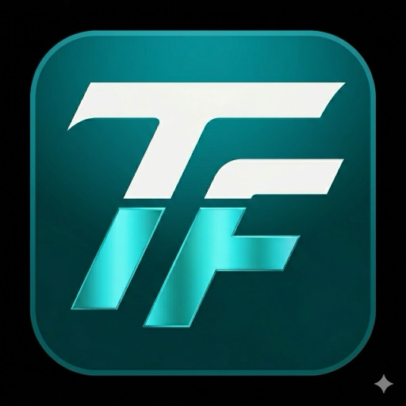

Программа
32 сессии по дням, залам и трекам. Личное расписание, фильтры по интересам, статусы Live/Soon/Moved.

TechForum 2026Программа, спикеры, карта залов, нетворкинг, AI-ассистент и push-уведомления о ваших сессиях — всё в одном Android-приложении. Сделано Bubble Group для участников TechForum 2026.
10 модулей, спроектированных под реальный сценарий участника форума — от первого утра до закрытия второго дня.
32 сессии по дням, залам и трекам. Личное расписание, фильтры по интересам, статусы Live/Soon/Moved.
15 публичных tech-figures: расширенные био, регалии, доклады, темы. Прямой переход к их сессиям.
Реал-тайм через WebSocket: общий канал, личные сообщения, голосовые, pin/reply/forward, заметки.
Спрашиваете «куда пойти на следующий слот по интересам AI» — отвечает с учётом расписания и ваших предпочтений.
Главный зал, Альфа, Бета, нетворкинг-зона, стенды партнёров, лаунж — без блужданий между этажами.
Обмен контактами за 2 секунды — отсканировал QR, получил карточку с интересами и ссылками.
Сканируется на входе в зал — фиксирует посещение для розыгрышей, никаких бумажных бейджей.
Firebase Cloud Messaging: напоминания за 15 минут до сессий, переносы, важные объявления оргкомитета.
10 призов: ноутбук, флагман, билеты на международные конференции, кофе со спикером, мерч и др.
Новости и анонсы оргкомитета, реакции, заметки по сессиям и собственная история «Мои записи».
20 и 21 мая 2026, Технополис «Инновация», Саратов. Параллельные треки в Главном зале, Альфе и Бете.
Generative AI, LLM в продакшне, исследования
Highload, distributed systems, JVM, observability
React, инструменты разработчика, build-tooling
Kubernetes, GPU-инфра, real-time коммуникации
Data platforms, pipelines, аналитика на масштабе
Стратегия, DevRel, найм senior-инженеров
Полная программа из 32 сессий — внутри приложения, с фильтрами по треку, залу и интересам.
15 реальных публичных tech-figures. Реальные роли, реальная экспертиза, никаких выдумок.
Основатель Highload++, 18+ конференций с 2007.
Директор по AI. YandexGPT в продакшне.
Руководитель research. Ex-Microsoft, NeurIPS / ICML.
Стратегический маркетинг. К.ф.-м.н., 35+ лет в IT.
JVM performance. Создатель JMH и Shenandoah GC.
AI Lead. Автор курса AI for Beginners (30k+ stars).
DevRel-эксперт. Основатель Moscow Python.
Tonsky.me, DataScript. Latency и dev-tools.
Создатель PostCSS, Autoprefixer, Browserslist.
DeepPavlov. Long-context LLM, NeurIPS / ACL.
Профессор, директор. Tensor methods, h-index 40+.
Профессор. Лидер русскоязычной школы Bayesian ML.
CTO. Один из ранних разработчиков ВКонтакте.
Архитектор платформы. Distributed systems на масштабе.
15 спикеров с расширенными био — внутри приложения.
Android APK, актуальная сборка v1.0.0 · 6542a1b. Размер ~12,5 МБ. Подпись debug — для участников форума.
⚠️ Сборка debug — для устройств участников форума. Production-релиз в Google Play готовится оргкомитетом.
Компании, без которых форум не состоится. Спасибо!
Поиск, Облако, AI и десятки массовых сервисов.
ПлатиновыйVKСоциальные платформы, медиа, коммуникации.
ПлатиновыйСберФинансы, AI и экосистема цифровых сервисов.
ЗолотойТ-БанкЦифровой банк, лидер DX в финтехе.
ЗолотойCloud.ruОблачная инфраструктура, GPU, ML-сервисы.
ТехнологическийAIRIИнститут искусственного интеллекта.
ТехнологическийСколтехСколковский институт науки и технологий.
СеребряныйФонд содействия инновациямПоддержка технологических стартапов.
Регистрация работает с 08:30 у главного входа. Чтобы успеть на церемонию открытия в 10:00, приходите минимум за 30 минут — собрать бейдж и стартовый пакет.
Бесплатная парковка для 200 машин у входа Б. На 1-й день рекомендуем приехать на метро или такси — ожидаются заторы.
Сканируется на входе в зал — фиксирует ваше посещение сессий (нужно для розыгрышей). Также QR-визитка для нетворкинга — обмен контактами за 2 секунды.
Keynote и треки 1–3 пишутся в видео, появятся на YouTube-канале форума через 7–10 дней. Воркшопы — без записи (NDA участников).
Откройте Настройки → Безопасность → Установка из неизвестных источников и разрешите для браузера или мессенджера, через который скачивали файл. На Android 13+ — разрешение запросит сам Android.
Стойка «Поддержка» на 1 этаже работает весь день. Срочные вопросы — support@techforum.ru или раздел «Поддержка» в приложении.